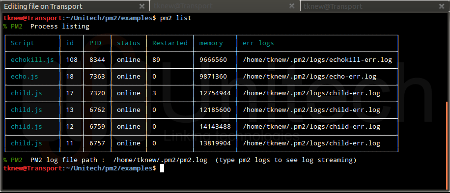

原文地址:Goodbye node-forever,hello PM2
devo.ps团队对JavaScript的迷恋已经不是什么秘密了;node.js作为服务器端,AngularJS作为客户端,某种程度上说,我们的堆栈是用它建成的.我们构建静态客户端和RESTful JSON API的方法意味着我们跑了很多的node.js,我必须承认尽管node.js的一切都令人敬畏,但当我们在生产环境中运行它时它仍然会让我们感到头疼.相比一些更加成熟的语言,它的工具和最佳实践仍然缺乏(试想一下:监控,日志,错误处理).
到目前为止,我们仍然依赖漂亮俏皮的node-forever模块.它是非常伟大的模块,不过依然缺失一些功能:
- 有限的监控和日志功能
- 进程管理配置的支持差
- 不支持集群
- 代码库老化(意味着在升级node.js时频繁的失败)
这就是为什么我们要在过去的几个月里去写PM2模块.在我们即将发布针对生产环境的正式版之前我们想先让您看一眼.
PM2到底是什么个东西呢?
首先第一件事,你需要先通过npm来安装它:
npm install -g pm2
让我们通过表格来对比下:
| Feature | Forever | PM2 |
|---|---|---|
| Keep Alive | ✔ | ✔ |
| Coffeescript | ✔ | |
| Log aggregation | ✔ | |
| API | ✔ | |
| Terminal monitoring | ✔ | |
| Clustering | ✔ | |
| JSON configuration | ✔ |
现在让我来介绍一点点主要特性…
原生的集群化支持
Node v0.6引入了集群特性,允许你在多个Node应用中共享socket.问题在于,它不能在容器外运行而且需要一些额外的配置来处理主进程和子进程.
PM2原生支持处理这个问题,而且不需要额外的代码:PM2本身作为主进程,然后它将你的代码封装到一个特殊的集群进程里,就像node.js一样,为你的代码文件添加一些全局变量.
想要启动一个使用所有CPU核心的集群,你只需要键入如下的指令:
$ pm2 start app.js -i max
然后:
$ pm2 list
然后就会显示类似下面的东西(ASCII UI FTW);

就像你看到的,现在你的应用有多少个进程就取决于你的CPU核心数了
按照termcaps-HTOP(Linux下的系统监控与进程管理软件)的方式管理
通过pm2 list命令来观察所有运行的进程以及它们的状态已经足够好了.但是怎么来追踪它们的资源消耗呢?别担心,用这个命令:
$ pm2 monit
你可以得到进程(以及集群)的CPU的使用率和内存占用.
声明:node-usage到目前为止还不支持MacOS(随便什么性能要求),不过它在Linux下运行良好.
现在,让我们来核实一下我们的集群,还有对内存堆栈的垃圾回收,我们假设你已经有一个HTTP基准测试工具(如果没有,你一定要使用WRK):
|
|
在另一个终端,运行监控选项:
$ pm2 monit
耶~
实时集中log处理
现在你不得不管理多个集群进程:一个爬取数据,一个处理数据,等等…这就意味着大量log,你可以按照老式的方法处理:
$ tail -f /path/to/log1 /path/to/log2 ...
但我们想的很周到,我们增加了logs功能:
$ pm2 logs
快速恢复
现在事情一切顺利,你的进程嗡嗡的运行着,你需要做一次硬重启(hard restart).现在吗?是的,首先,dump掉:
$ pm2 dump
然后,你可以从文件中恢复它:
$ pm2 kill //让我们假设一个PM2停掉了
$ pm2 resurect //我所有的进程又满血满状态复活了
强健的API
比方说,你想要监控所有被PM2管理的进程,而且同时还想监控运行这些进程的机器的状态(甚至希望创建一个Angular应用来调用这些API…):
$ pm2 web
打开浏览器输入http://localhost:9615 ,我嘞个去!